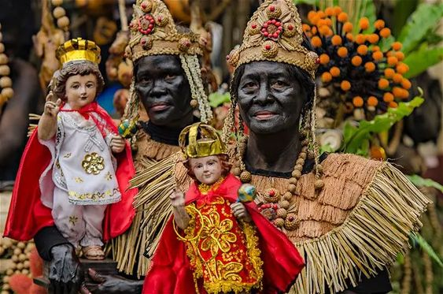

Festivals Celebrated in
The Philippines Every Month
Every month of the year, the different festivals in the Philippines bring a spirit of joy with cheerful
dances and colourful feasts. Between the parade floats and banderitas and delicious food, the Filipino fiesta
has become a symbol of warmth, generosity, and sense of community. From Luzon to Mindanao, we get to witness the
incredible cultural diversity that our country has to offer.
Introduction
༊*·˚ January ༊*·˚
1. Ati-Atihan Festival (Kalibo Aklan)

No list of Filipino fiestas would be complete without the Ati-Atihan Festival in Kalibo, Aklan.
One of the most popular festivals in the Philippines, this Filipino festival lives up to its name as the “Mother of All
Philippine Festivals” through one epic week of tribal dancing, lively street parades, religious processions, and of course,
free-flowing drinks!
The festival consists of religious processions and street-parades, showcasing themed floats, dancing groups wearing colorful
costumes, marching bands, and people sporting face and body paints. The street parade is known as Sadsad, which is also what
the locals call their way of dancing where the foot is momentarily dragged along the ground in tune to the beat played by the marching bands.
Being believed to be the oldest festival in the Philippines and having inspired other popular Philippine festivals such as Dinagyang of
Iloilo and Sinulog of Cebu.
Originally, the festival traces its origins to the Barter of Panay, where the Aeta people received gifts from Malay
chieftains who had escaped Borneo and found refuge on Panay Island in the 13th century. And so,
the participants of the Ati-Atihan Festival give honour to the Aeta people by painting their faces ebony.
2.Philippines International Hot Air Balloon Festival(Pampanga)
For four beautiful days in Clark, Pampanga, the annual Philippine International Hot Air Balloon Fiesta
attracts people with its tagline: “A Weekend of Everything that Flies.”
Initially, the festival organisers came up with a plan to boost the local economy after the catastrophic eruption of
Mount Pinatubo in 1994. Today, this non-religious Filipino festival showcases hot air balloons, rocketry demonstrations,
freestyle aerobatics, helicopter-flying exhibitions, kite-flying, and other thrilling activities. Currently, this balloon fiesta
holds the title of the longest-running aviation sports event in the Philippines, gathering almost 100,000 people each year.
The Philippine International Hot Air Balloon Fiesta is an annual four-day air-sporting event held each year between January and
February at the Clark Freeport Zone in Pampanga. A weekend of everything that flies will feature paragliding and kite flying activities,
aircraft displays, and more. The 1994 event originally organized by the Department of Tourism (DOT), the Hot Air Balloon Club, and British
Airways initially began with 21 balloon pilots from 10 countries and one entry from the Philippines. This was celebrated during 12th to 15th
of February. This festival was also known to be the longest running aviation event in asia. This festival is designed to attract key
industries like information technology, aviation, and tourism, New Clark City boasts state-of-the-art facilities including a world-class
sports complex and government center, exemplifying its commitment to economic growth and innovation.
3. Malasimbo Music and Arts Festival (Puerto, Galera)
An annual summer event and eco-tourism that boasts of international and local artists every FEBRUARY or MARCH.
Held first in Puerto Galera in the province of Oriental Mindoro, Philippines, it is organized around its four pillars: arts, environment, indigenous people, and music.
First held in Puerto Galera, Oriental Mindoro on February 18 and 19, 2011. Organized by Volume Unit Entertainment with nonprofit, non-government D’Aboville Foundation as host,
its founders are couple Hubert d’Aboville, Ara d’Aboville, and their son-in-law Miro Grgic. Its name comes from its venue, the Malasimbo Amphitheater, which is sculpted in
the rolling, grassy foothills of Mt. Malasimbo amidst coconut groves within the property owned by the D’Abovilles.
Grgic, festival director, first thought of holding a music and arts festival way back in 2010. The d’Abovilles are advocates of indigenous people, particularly the
Mangyans who settled in the province of Oriental Mindoro for centuries; and their daughter and Grgic’s spouse artist Olivia Grgic is the curator for the fest’s
art installations.
The festival’s music is eclectic and showcases wide-ranging genres like electronic, ethnic, funk, hip hop, house, jazz, reggae, and soul. Filipino and foreign
musicians grace the stage to the delight of people who come from different places and backgrounds.
One other aspect of the festival are the art installations and performance arts that can be found in the venue. They are curated in a way that blend within the
atmosphere of the festivity and the venue.
The Moriones is an annual festival held on Holy Week on the island of Marinduque, Philippines. The "Moriones" are men and women in costumes and
masks replicating the garb of biblical Roman soldiers as interpreted by local folk. The Moriones or Moryonan tradition has inspired the creation of other
festivals in the Philippines where cultural practices or folk history are turned into street festivals.
Morion means "mask" or "visor," a part of the medieval Roman armor which covers the face. Moriones, on the other hand, refers to the masked and
costumed penitents who march around the town for seven days searching for Longinus. Morions roam the streets in town from Holy Monday to Easter Sunday
scaring the kids, or engaging in antics or surprises to draw attention. This is a folk-religious festival that re-enacts the story of Saint Longinus,
a Roman centurion who was blind in one eye. The festival is characterized by colorful Roman costumes, painted masks and helmets, and brightly-colored tunics.
The towns of Boac, Gasan, Santa Cruz, Buenavista and Mogpog in the island of Marinduque become one gigantic stage. The observances form part of the Lenten celebrations
of Marinduque. The various towns also hold the unique tradition of the pabasa or the recitation of Christ's passion in verse.
Then at three o'clock on Good Friday afternoon, the Santo Sepulcro is observed, whereby old women exchange verses based on the Bible as they stand in the wake
of the dead Christ. One of the highlights of this festival is the Via Crucis. A re-enactment of the suffering of Christ on his way to the Calvary.
Men inflict suffering upon themselves by whipping their backs, carrying a wooden cross and sometimes even crucifixion. They see this act as their form
of atonement for their sins. This weeklong celebration starts on Holy Monday and ends on Easter Sunday.
Pahiyas came from two terms in the Philippines: ‘hiyas,’ which is a rare stone, and ‘payas,’ which means to decorate anything for an offering. The Pahiyas celebration
translates to “presenting the most valuable pearls of the abundant crop”.
Pahiyas Festival is a food, harvest, and religious festival in honor of San Isidro Labrador (St. Isidore the Worker) held in the town of Lucban, Quezon, Philippines every 15th of May.
It is officially named Lucban San Isidro Pahiyas Festival.
Blending religious veneration to the saint, the town’s patron and the patron of farmers in Roman Catholic faith, and thanksgiving for good harvest,
it is famous as the country’s most colorful festival brought about by decorated houses that participate in Timpalak Pahiyas competition.
Every 15 May, locals decorate their houses with various fruits, vegetables, flowers and other produce, often in a stylistic design. Kipings
(a thin leaf-shaped wafer made from rice paper) and longganisas (a Filipino sausage) are also considered ornamental during the festival. But beyond the
beautification of houses, the highlight of the festival is the ‘Kalas’ procession, when people grab as much produce as they can from the decorated houses.
Throughout the celebrations, which tend to last around two weeks, there are also competitions, parades, cultural performances, exhibits, and plenty of fiestas.
Origins of the festival date back the 15th century as an early thanksgiving ceremony. Farmers would bring their crops to the foot of Mount Banahaw as
a celebration of a bountiful harvest. Over time, they began offering their produce to the church in honour of San Isidro. But as the tradition continued to grow,
the churches did not have the facilities to keep the harvest offerings. Instead, farmers were asked to display their produce outside their own homes, and the parish
priest would go door-to-door blessing each harvest. As time moved forward, locals wanted to ensure their traditions will not be forgotten into the future.
This is why in 1963, the Pahiyas Festival was official founded by Fernando Cadeliña Nañawa, president of the Art Club of Lucban.
Pintados Kasadyaan is one of the most anticipated and unique festivals in the whole country. Many look forward to it because of the Pintados tattoo,
colorful clothes, lively atmosphere, and nonstop partying. This event serves as a mix of two well-known festivals: the Kasadyaan Festival and the Pintados Festival.
In the local language, “kasadyaan” means “happiness.” Meanwhile, “Pintados” refers to the brave
warriors of the past who lived in the area.
The Pintados-Kasadyaan Festival is annually held in Tacloban on June 29. Also called the “Festival of Festivals,” it spreads like a wave throughout
the Philippines.
Moreover, its glory can be seen in the dances, acts, and activities. The locals tell stories and legends about brave warriors from the past during the festival.
They do this through dance numbers and musical performances. Meanwhile, dancers paint their bodies to make them look like they are wearing armor.
South Cotabato province has a big celebration every year known as T’nalak Festival. Every July, the festival is a week-long celebration held in Koronadal City,
the capital of South Cotabato.
The festival gets its name from “t’nalak,” a colorful abaca cloth, created and woven by the women of the T’boli tribe of South Cotabato. The design of the cloth is unique
and “dreamed up” by the person who creates it. That’s why the province is known as “The Land of the Dreamweavers.” The T’nalak fabric serves as the festival icon because
it symbolizes the blending of the culture, strength, and unity of the various ethnic groups living in the province.
The T’nalak Festival also commemorates the works of Lang Dulay, a T’boli princess from Lake Sebu who was the best weaver of her time.
She was awarded the “Gawad sa Manlilikha ng Bayan” or the “National Living Treasure Award” in 1998.
The festival’s name is derived from the Mandaya word “madayaw,” meaning treasured or valuable, as the locals use this time to give thanks for the season’s bountiful harvest. Back in the day,
the ethnic tribes of Davao would come together to celebrate abundant crops, performing rituals that paid tribute to the nature gods.
They used to display fruits, vegetables, flowers, rice, and corn grains on their mats and at the front of their houses as a sign of respect for the great year they’ve had.
They used to sing and dance as well, much like what they do today.
In the 1970s, then Mayor Elias B. Lopez, encouraged the different Davao tribes to showcase their thanksgiving rituals. In 1986, the Davao City government launched a project
that aimed to unite the people during the turbulent times of the Martial Law.
Back then, the name of the festival was called Apo Duwaling, after three natural wonders you can find the region: Mt. Apo, Durian, and Waling-waling.
It was first officially renamed as the Kadayawan Festival in 1988 by then Mayor Rodrigo Duterte, and now, over 30 years later, it’s still being celebrated.
One of the oldest religious festivals in the Philippines is the Peñafrancia Festival, which takes place in Naga City, Camarines Sur in the Bicol Region. For more than 300 years,
thousands of religious devotees have flocked to Naga in honour of Bicol’s patron saint, Our Lady of Peñafrancia.
What follows is a celebration of two feasts: the Divino Rostro (Holy Face of Jesus) on the second Friday of September and the fluvial procession for Our Lady of Peñafrancia on
the third Sunday of September. Thanks to the popularity of the festival, Naga has been referred to as the “pilgrim city” of the Philippines.
The origin of Peñafrancia Festival is a story of healing. In the 18th century, a student of University of Santo Tomas and seminarian by the name of Miguel Robles de Covarrubias was quite sick.
He prayed to the Blessed Mother and promised that if he regained his strength he would build a church in her honor. His eventual recovery was regarded
as a miracle bestowed by the patroness.
When he became a priest of the secular clergy, he enshrined a painting in Paco, Manila that was a copy of Our Lady of Peña de Francia in Spain in 1697.
Later, he was assigned in Nueva Caceres. He had a statue made out of the replica of the patron and constructed a small church at the hills of Mt. Isarog.
In 1710, the first every procession was recorded and it described how the image was installed in the chapel. This is also the year that festival’s anniversary is reckoned.
The history of the devotion was chronicled in 1866 by Bishop Francisco Gainza, once the bishop of the Nueva Caceres. Gainza also established the traslacion,
that is the journey of the image between the shrine and basilica minore, two years earlier as part of the annual religious rite because the shrine was not spacious enough to
accommodate the devotees during the feast day. He also helped in starting the reconstruction of the shrine that was in poor state.
10. MassKara Festival (Bacolod, Negros Occidental)
This annual festival, which is similar to Brazil’s Rio Carnival, literally translates to “many faces,” and is celebrated every October in Bacolod. Because of
the smiling faces of the mask, Bacolod City got the nickname of The City of Smiles.
The MassKara Festival can trace its roots back to the 1980s and was born out of a crisis. It was during the time when the province's main livelihood,
sugar, was priced at an all-time low because of alternatives introduced in the market, which resulted in one of the worst famines in the country's history
that affected an estimated one million people.
It was also the time when a tragic ferry accident happened, which carried mostly people from the province including those from prominent families of Bacolod.
To lift the spirits of the locals and bring back the smiles on their faces, the MassKara Festival was created. The smiling masks were a declaration of the people of
Bacolod City that they will pull through and survive the challenges and tragedies that they are facing.
The Arts Association of Bacolod-Negros, headed by Rodney Martinez, conducted workshops around Negros and taught the residents on how to make masks using coconut husks and paper mâché.
Originally, these masks were created just to be sold to tourists and to generate income, and not for a festival that they were yet to conceptualize.
The colorful masks created by the local residents were supposedly a signature souvenir of the province and to get the attention of foreign visitors.
Luckily, the idea was a hit and tourists started buying the masks as they were light and easy to bring around. Visitors can also wear them while touring the Bacolod tourist spots.
Known as the hometown of national artists like Botong Francisco and Lucio San Pedro, Angono takes pride in its artistic heritage and the talent
of its community — a creative passion that rises to the occasion during the Higantes Festival. Every November, the townsfolk parade hundreds of giant puppets on the street,
simultaneously celebrated with Saint Clement’s feast day.
During Spanish colonial rule in Angono, the Spaniards banned celebrations and permitted only one festival each year. Turning this rule on its head,
the townsfolk used papier-mâché — an art method brought by the Spaniards — to make giant caricatures in their likeness, poking fun at these landowners. What began as a
clever symbol of protest is now a major festival in the Philippines.Additionally, this fiesta incorporates local myths and folklore, producing giants that can measure
up to 12 feet high to smaller giants known as higantitos.
The Municipality of Angono likewise considers the ‘higante’ as the symbol of the people’s aspiration to be great in their respective field and contribute to the
development and pride of this town which is home to two National Artists namely ‘Botong’ Francisco (Painting) and Maestro Lucio San Pedro (Music)
Saguinsin also theorized that the giant papier mache only started after World War II when artist Carlos ‘Botong’ Francisco asked the first higante maker, Artemio Tajan,
to add an element of festivity and joy to the post-War ambience of Angono fiesta celebration.
A study made by Far Eastern University professor James Owen Saguinsin, however, theorized that the higante was inexistent and the locals of Angono actually refer to a tall and towering ‘katiwala’
or hacienda caretaker named Karias Tangkad as the giant whom the residents were exacting and taking revenge, which is ‘higanti’ in Filipino
The Giant Lantern Festival is an annual event celebrated on the Saturday before Christmas Eve in. Huge lanterns are the star of the show at this annual festival, earning San Fernando the
title “Christmas Capital of the Philippines” because of the festival’s popularity.
The word “parol” comes from the Spanish word “farol,” which means “lantern” or “light.”
In the Philippines, the parol is the country’s hallmark for the Christmas spirit. Filipinos celebrate Christmas by decorating their homes with the traditional parol,
usually a five-pointed, star-shaped lantern.
The Giant Lantern Festival of San Fernando was based on a much smaller event in Bacolor. It is said that the “Ligligan Parul” (Lantern Competition) was first held in San Fernando in 1904.
However, some claim that the “Ligligan Parul” did not begin right after the relocation, but in 1908.
This forerunner of today’s Giant Lantern Festival was taking part in a religious activity known today as “lubenas,” a novena (nine-day prayer) before Christmas that fell between December 16 and 24.
As the lanterns became larger and the designs became more creative, the tradition evolved. Later, each barrio made its own large lantern through collaborative efforts.
The first Giant Lantern Festival was held in San Fernando, when electricity was first brought to the area in 1931.
The dancing lights brought these Giant Lanterns’ vibrant colors and elaborate designs to life, switching on and off in response to the best music of the time to control lighting.